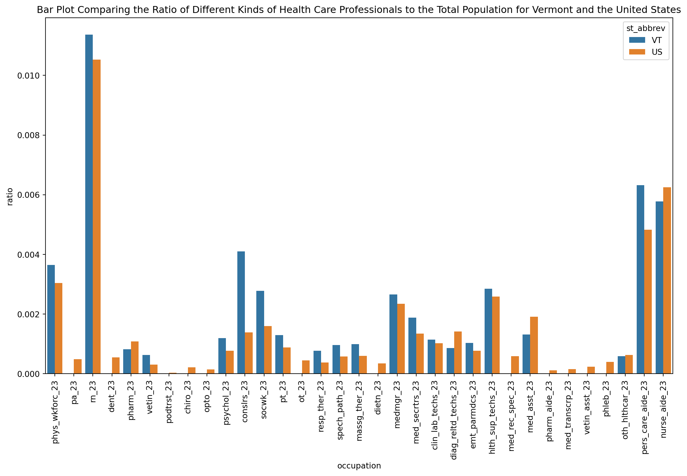
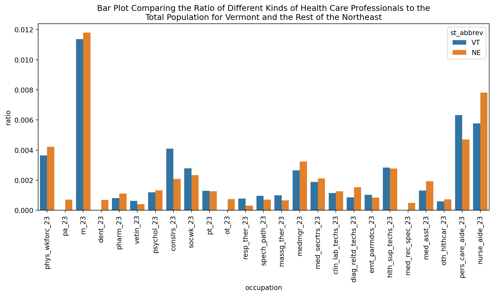

The below code sets the project root to the right location, making file paths easier to manage
import osfrom pathlib import Path_project_root = Path.cwd()whilenot (_project_root /".git").exists(): _project_root = _project_root.parentif _project_root == _project_root.parent:raiseRuntimeError(".git not found — are you inside the repo?")os.chdir(_project_root)print(os.getcwd())
Creating the database and some more data engineering
The below code block is going to create a database connection to the large and small clean healthcare databases made in the engineering.qmd file
import duckdbcon = duckdb.connect()con.execute(f""" CREATE OR REPLACE TABLE small_healthcare AS SELECT * FROM read_parquet('{"Data/clean_data/small_2024_health_data.parquet"}')""")con.execute(f""" CREATE OR REPLACE TABLE large_healthcare AS SELECT * FROM read_parquet('{"Data/clean_data/large_2024_health_data.parquet"}')""")con.execute(f""" CREATE OR REPLACE TABLE small_combined_healthcare AS SELECT * FROM read_parquet('{"Data/clean_data/small_2024_health_data.parquet"}') WHERE st_abbrev = 'VT' OR st_abbrev = 'US'""")
<_duckdb.DuckDBPyConnection at 0x110894f70>
Questions to answer 1) How does Vermont’s ratios of health care professions look compared to the US as a whole - graph 1: Bar plot of ratio of vermont next to US ratio - will need to do some pivoting of data and such - graph 2: do the same as above, but instead by summing the northeast region - how does vermont compare to the local region - questions: - include vermont or not? - take the ratios of each state and average them, or sum the states values and average them? 2) States with the most physicians, and their total population - basically, do the numbers align - and do the same with the least physicians 3) States with the greatest ratio of physicians, and with the smallest ratio
This code chunk below sets up the datasets that will be plotted and used in the future
import pandas as pdsmall_health_df = pd.read_parquet('Data/clean_data/small_2024_health_data.parquet')large_health_df = pd.read_parquet('Data/clean_data/large_2024_health_data.parquet')occupation_count_columns = small_health_df.columns[2:35].tolist()small_ratio_df = small_health_df.copy()for i in occupation_count_columns: small_ratio_df[i] = small_ratio_df[i]/small_ratio_df['popn_pums_23']small_combined_ratio_df = small_ratio_df[(small_ratio_df['st_abbrev'] =='VT') | (small_ratio_df['st_abbrev'] =='US')]small_combined_ratio_melted = small_combined_ratio_df.melt(id_vars='st_abbrev', value_vars=occupation_count_columns, var_name='occupation', value_name='ratio')# to find columns with nan values so they can be removedwith pd.option_context('display.max_columns', None):print(small_health_df[(small_health_df['st_abbrev'] !='VT') & (small_health_df['region'] =='NE')])#columns with nan values: podtrst, chiro, opto, dietn, pharm_aide, med_transcrp, vetin_asst, phleb,occupation_count_columns_ne = occupation_count_columnsoccupation_count_columns_ne.remove('podtrst_23')occupation_count_columns_ne.remove('chiro_23')occupation_count_columns_ne.remove('opto_23')occupation_count_columns_ne.remove('dietn_23')occupation_count_columns_ne.remove('pharm_aide_23')occupation_count_columns_ne.remove('med_transcrp_23')occupation_count_columns_ne.remove('vetin_asst_23')occupation_count_columns_ne.remove('phleb_23')ne_without_vt_sum_df = small_health_df[(small_health_df['st_abbrev'] !='VT') & (small_health_df['region'] =='NE')].sum()vt_only_df = small_health_df.iloc[45]ne_without_vt_sum_df['st_abbrev'] ='NE'ne_without_vt_sum_df['region'] ='NE'ne_without_vt_sum_df['fips_st'] ='-99'#representing a null valuevt_and_ne_df = pd.DataFrame([vt_only_df, ne_without_vt_sum_df])vt_and_ne_df = vt_and_ne_df.reset_index().drop('index', axis=1)vt_and_ne_ratio_df = vt_and_ne_df.copy()for i in occupation_count_columns: vt_and_ne_ratio_df[i] = vt_and_ne_ratio_df[i]/vt_and_ne_ratio_df['popn_pums_23']vt_and_ne_ratio_melted = vt_and_ne_ratio_df.melt(id_vars='st_abbrev', value_vars=occupation_count_columns, var_name='occupation', value_name='ratio')
fips_st st_abbrev phys_wkforc_23 pa_23 rn_23 dent_23 pharm_23 \
6 9 CT 14223 2646.0 38042 2230.0 3519.0
19 23 ME 4303 1153.0 15819 719.0 1603.0
21 25 MA 33466 5041.0 88714 5602.0 8215.0
29 33 NH 4448 776.0 16353 1020.0 1263.0
39 44 RI 4325 519.0 11593 464.0 1444.0
vetin_23 podtrst_23 chiro_23 opto_23 psychol_23 conslrs_23 socwk_23 \
6 1415.0 NaN 916.0 422.0 5317.0 5200 7929
19 575.0 NaN NaN NaN 1097.0 2519 3494
21 2926.0 NaN 1228.0 939.0 10273.0 17436 17519
29 716.0 NaN NaN NaN 1218.0 2635 1917
39 360.0 NaN NaN NaN 1385.0 2275 2866
pt_23 ot_23 resp_ther_23 spech_path_23 massg_ther_23 dietn_23 \
6 4222 1835.0 1124.0 2328.0 2204.0 1168.0
19 1208 1112.0 467.0 927.0 852.0 630.0
21 9269 5265.0 1941.0 5208.0 4560.0 3268.0
29 2314 1883.0 575.0 1154.0 1273.0 NaN
39 1306 540.0 332.0 595.0 570.0 306.0
medmgr_23 med_secrtrs_23 clin_lab_techs_23 diag_reltd_techs_23 \
6 11075 6857 3736 6002
19 4103 2894 1524 2265
21 23786 15580 9987 10529
29 4293 2353 1007 1934
39 3614 3013 1990 1482
emt_parmdcs_23 hlth_sup_techs_23 med_rec_spec_23 med_asst_23 \
6 3124 9597 2119.0 7150.0
19 1060 4413 794.0 3023.0
21 6591 19000 2969.0 13475.0
29 689 4226 730.0 2292.0
39 816 2739 443.0 2049.0
pharm_aide_23 med_transcrp_23 vetin_asst_23 phleb_23 oth_hlthcar_23 \
6 NaN 213.0 725.0 1608.0 2790
19 NaN NaN NaN NaN 974
21 905.0 616.0 1379.0 3628.0 4664
29 NaN NaN 449.0 389.0 1132
39 NaN NaN NaN 669.0 961
pers_care_aide_23 nurse_aide_23 popn_pums_23 popn_ge60_23 popn_24 \
6 18009 27475 3598348 907442 3675069
19 7496 11300 1377400 411816 1405012
21 34794 55493 6992395 1697264 7136171
29 3932 8974 1387835 381063 1409032
39 3658 9804 1095371 279082 1112308
region
6 NE
19 NE
21 NE
29 NE
39 NE
Exploratory Data Analysis
The code chunk below answers the question of which states have the most physicians, and which ones have the least using Pandas
physician_sorted_df = small_health_df.drop(51).sort_values(by='phys_wkforc_23', ascending=False)[['st_abbrev', 'phys_wkforc_23', 'popn_pums_23']]print("\n the 10 states with the most physicians")display(physician_sorted_df.head(10))print("\nthe 10 states with the fewest physicians")display(physician_sorted_df.tail(10))
the 10 states with the most physicians
st_abbrev
phys_wkforc_23
popn_pums_23
4
CA
115435
39242785
32
NY
88345
19872319
43
TX
73675
29640343
9
FL
64392
21928881
38
PA
47128
12986518
35
OH
39774
11780046
13
IL
38946
12692653
21
MA
33466
6992395
22
MI
31279
10051595
33
NC
30755
10584340
the 10 states with the fewest physicians
st_abbrev
phys_wkforc_23
popn_pums_23
39
RI
4325
1095371
19
ME
4303
1377400
12
ID
3814
1893297
7
DE
3375
1005873
26
MT
3259
1105072
41
SD
2810
899194
45
VT
2354
645254
34
ND
2244
779361
1
AK
2158
733971
50
WY
960
579761
The code chunk below answers the of which states have the most physicians, and which ones have the least using SQL
print("\n the 10 states with the most physicians")display(con.execute("""SELECT st_abbrev, phys_wkforc_23, popn_pums_23 FROM small_healthcare WHERE st_abbrev != 'US' ORDER BY phys_wkforc_23 DESC LIMIT 10""").df())print("\n the 10 states with the fewest physicians")display(con.execute("""SELECT st_abbrev, phys_wkforc_23, popn_pums_23 FROM small_healthcare WHERE st_abbrev != 'US' ORDER BY phys_wkforc_23 LIMIT 10""").df())
the 10 states with the most physicians
st_abbrev
phys_wkforc_23
popn_pums_23
0
CA
115435
39242785
1
NY
88345
19872319
2
TX
73675
29640343
3
FL
64392
21928881
4
PA
47128
12986518
5
OH
39774
11780046
6
IL
38946
12692653
7
MA
33466
6992395
8
MI
31279
10051595
9
NC
30755
10584340
the 10 states with the fewest physicians
st_abbrev
phys_wkforc_23
popn_pums_23
0
WY
960
579761
1
AK
2158
733971
2
ND
2244
779361
3
VT
2354
645254
4
SD
2810
899194
5
MT
3259
1105072
6
DE
3375
1005873
7
ID
3814
1893297
8
ME
4303
1377400
9
RI
4325
1095371
The code chunk below answers the question of what states have the largest and smallest ratio of health care professionals using Pandas
The code chunk below answers the question of what states have the largest and smallest ratio of health care professionals using SQL
con.execute("ALTER TABLE small_healthcare ADD phys_wkforc_ratio_23 FLOAT")con.execute("UPDATE small_healthcare SET phys_wkforc_ratio_23 = phys_wkforc_23/popn_pums_23")display(con.execute("SELECT st_abbrev, phys_wkforc_ratio_23, popn_pums_23 FROM small_healthcare ORDER BY phys_wkforc_ratio_23 DESC").df())
st_abbrev
phys_wkforc_ratio_23
popn_pums_23
0
DC
0.009578
672079
1
MA
0.004786
6992395
2
NY
0.004446
19872319
3
HI
0.003972
1445635
4
CT
0.003953
3598348
5
RI
0.003948
1095371
6
MD
0.003654
6170738
7
VT
0.003648
645254
8
PA
0.003629
12986518
9
OR
0.003590
4238714
10
OH
0.003376
11780046
11
DE
0.003355
1005873
12
CO
0.003228
5810774
13
NJ
0.003208
9267014
14
NH
0.003205
1387835
15
WA
0.003170
7740984
16
SD
0.003125
899194
17
ME
0.003124
1377400
18
MI
0.003112
10051595
19
IL
0.003068
12692653
20
US
0.003039
332387543
21
WV
0.003028
1784462
22
MN
0.002981
5713716
23
MT
0.002949
1105072
24
CA
0.002942
39242785
25
AK
0.002940
733971
26
FL
0.002936
21928881
27
TN
0.002913
6986082
28
VA
0.002912
8657499
29
NC
0.002906
10584340
30
ND
0.002879
779361
31
MO
0.002864
6168181
32
SC
0.002779
5212774
33
NE
0.002728
1965926
34
UT
0.002658
3331187
35
IA
0.002657
3195937
36
LA
0.002639
4621025
37
OK
0.002629
3995260
38
WI
0.002617
5892023
39
NM
0.002582
2114768
40
GA
0.002542
10822590
41
AZ
0.002511
7268175
42
TX
0.002486
29640343
43
AL
0.002462
5054253
44
IN
0.002348
6811752
45
KY
0.002261
4510725
46
KS
0.002207
2937569
47
AR
0.002141
3032651
48
ID
0.002014
1893297
49
MS
0.002010
2951438
50
NV
0.001910
3141000
51
WY
0.001656
579761
Plotting
The goal of this section is to now dive into how Vermont compares to the United States, as well as other states like Vermont
The code chunk below does the plotting for the first plot
What this plot is supposed to show is the ratio of different workers in different health care professions in Vermont compared to the US as a whole. This will be helpful in understanding how Vermont’s healthcare system compares to the US.
import matplotlib.pyplot as pltimport seaborn as snsplt.figure(figsize=(12, 5))plt.xticks(rotation=90)sns.barplot(data=small_combined_ratio_melted, x='occupation', y='ratio', hue='st_abbrev')plt.title("Bar Plot Comparing the Ratio of Different Kinds of Health Care Professionals to the\nTotal Population for Vermont and the United States")plt.show()

Looking at the plot now, we see that Vermont has more physicians than the US on average, and tends to have a slightly higher ratio of health professionals in general. While there are a number of professions where there is no blue bar, this is because there was no data collected for those professions, rather than there being basically no one practicing them. Besides the fact that the professions with no data in Vermont are generally the least numerous professions, I know that at least some of the lack of data is because it is not collected not that there is no one practicing those professions, as one bar with no data is ot_23, standing for occupational therapist and I know there are occupational therapists currently practicing in Vermont.
The code chunk below does the plotting for the second plot
plt.figure(figsize=(12, 5))plt.xticks(rotation=90)sns.barplot(data=vt_and_ne_ratio_melted, x='occupation', y='ratio', hue='st_abbrev')plt.title("Bar Plot Comparing the Ratio of Different Kinds of Health Care Professionals to the\nTotal Population for Vermont and the Rest of the Northeast")plt.show()

This plot takes looking at the whole of the United States, and narrows it down to the rest of the northeast. This means that Vermont is being compared to similar states, namely Connecticut, Maine, Massachusetts, New Hampshire, and Rhode Island. This was done by adding the the profession numbers as well as the populations of those states together, and dividing the profession numbers by the summed population to get a ratio of professionals to population for the entire Northeast leaving out Vermont. Vermont is left out because there are not too a lot of states in the Northeast, and if Vermont was left in, its numbers would skew the Northeast average closer to Vermont’s, and the goal here is not to find the northeast average, but to compare Vermont’s health care profession ratio’s to other similar states.
Looking at the results, we can see that Vermont and the other Northeast States are pretty similar. For most of the ratio’s, we can see that the other Northeast States have on average slightly more health-care professionals compared to their total population. That being said, Vermont does have a substantially larger ratio of counselors and personal care aides, as well as slightly more social workers, repository therapists, speech pathologists, and massage therapists.
Conclusion
In conclusion, Vermont is similar to the rest of the Northeast when it comes to the ratio of health care professionals to its total population. That being said, the Northeast as a whole has a larger ratio of health professionals to its population, and Vermont tends to have ratios greater than the United States as a whole.
If your looking for something surprising, the amount of counselors Vermont has is quite surprising, with its ratio being about double the ratio that the United States had. Beyond that, there was nothing too surprising in the data to me as a non-expert, though if you are an expert some of the numbers might be more shocking.
While I am wrapping up this project right now, if I have more time to devote to this then doing analysis on the cosine similarly of and k-means clustering on the ratio’s of health professions between states would be interesting. I picked the Northeast region as a whole when looking for other states that are similar to Vermont, but it would be interesting seeing what the data actually says about which states are similar.